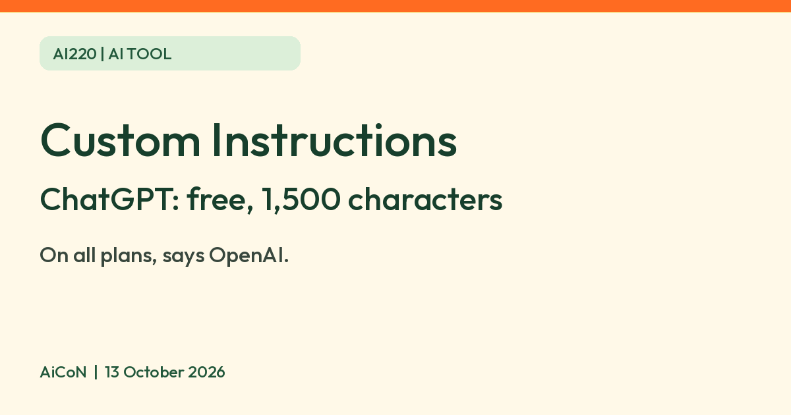

ChatGPT custom instructions: set your answer style once, free up to 1,500 characters
OpenAI says custom instructions are on all ChatGPT plans, with 1,500 characters on Free and Go. Set your preferred answer style once. Check the data note first.

Official OpenAI reference

No official feature images were found in the checked sources, so only the wordmark is shown. See OpenAI's personalization guide and the official Academy demo. The demo was posted in May 2025; its layout may differ from today's app. No unverified YouTube video is embedded.
What it is
Custom instructions let you tell ChatGPT how you want it to answer, once, so you do not repeat it in every chat. OpenAI's help page says they are applied immediately to all chats, including existing conversations. You can write things like how formal to be, how long answers should be, or what you do for work.
Is it free?
Yes. OpenAI's help page says custom instructions are available on all plans, on web, desktop, iOS and Android. Free and Go users can save up to 1,500 characters. Plus, Pro, Business, Enterprise and Education users get up to 5,000. You need a ChatGPT account. OpenAI's countries page lists India among the supported countries. The custom instructions page does not mention any country limit.
How to turn it on, per OpenAI
- Web and desktop: open Settings, choose Personalization, make sure "Enable customization" is on, then type in the Custom Instructions field.
- iOS and Android: open Settings, choose Customize ChatGPT, make sure "Enable customization" is on, then type in the Custom Instructions field.
- To stop, switch "Enable customization" off. You can also delete the text.
- OpenAI says settings apply immediately across all chats, including existing ones. This does not rewrite old messages. Its FAQ separately says earlier instruction versions remain in chat history unless you clear those conversations.
What to write (AiCoN suggestions)
- How you want answers: short, plain words, step by step, or with an example.
- Your language or region, if you want answers in Hindi or in INR prices.
- What you want it to avoid, such as long intros.
- Keep it under 1,500 characters on a free account. The word count depends on the words, spaces and language you use.
Privacy: what OpenAI says
- Your instructions are not shared with people who open a shared chat link.
- OpenAI says information from your use of custom instructions is also used to improve model performance. It links to how your data is used and how to opt out. That page says business products are not used for training by default; account and workspace settings matter.
- Custom instructions are included in your ChatGPT data export.
- If you delete your OpenAI account, OpenAI says instructions tied to it are deleted within 30 days. De-identified chat records may remain unless you opted out of training use.
- OpenAI warns that if you use third-party plug-ins, the model may pass relevant information from your instructions to plug-in developers.
- AiCoN advice: do not put health details, ID numbers, passwords or your address in custom instructions.
Frequently asked questions
Does it cost anything on the free plan?
OpenAI says the feature is on all plans. The help page lists no separate charge. The free limit is 1,500 characters.
Will old chats change?
Already-written messages do not change. The same help page says settings apply immediately across all chats, but its history FAQ says earlier instruction versions remain in old conversations unless you clear them. These statements describe settings and stored chat history differently; check your own chats rather than assuming old content was removed.
Is there an API for it?
OpenAI says there will be no API for custom instructions. Developers use system messages instead.
What changed since this post?
Official sources rechecked on 13 October 2026. The custom instructions help page says "Updated: 2 months ago" and lists 1,500 characters for Free and Go, and 5,000 for the named paid plans. India is listed on the supported-countries page. No free-account test was performed. The help page describes immediate settings changes and retained old instruction history separately, as explained above.
Sources: OpenAI Help: ChatGPT Custom Instructions, OpenAI Help: ChatGPT supported countries. Checked 13 October 2026.